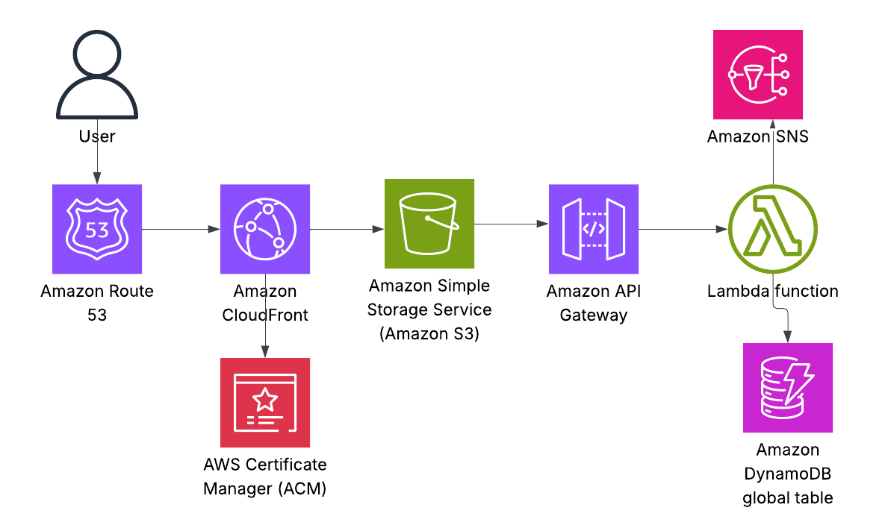
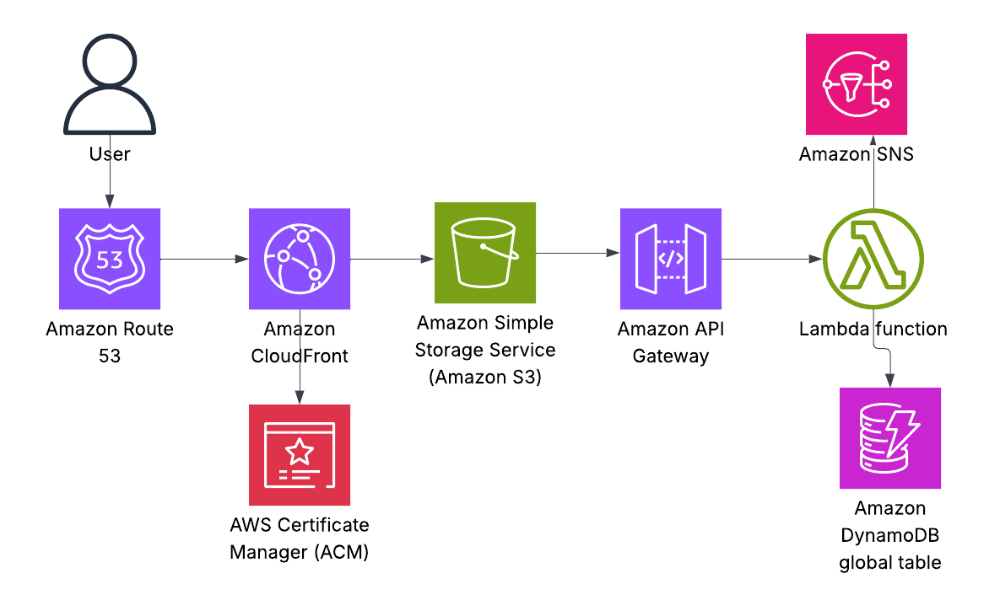
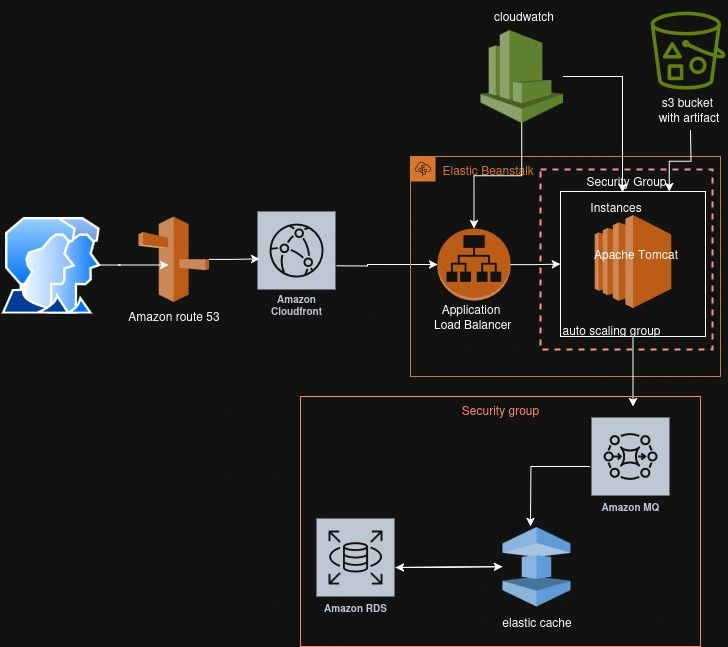

A fully automated 'Shift Left' quality focused pipeline that ensures every release is validated against strict quality gates, securely versioned and provides developers with instant feedback in slack.
 

This is a serverless web application hosted on AWS using the following services: Amazon S3, Amazon Cloudfront,AWS Route53, AWSLambda, Amazon API Gateway, Amazon DynamoDB, Amazon SNS

This project demonstrates the containerization of an application using Docker and Docker Compose.

This is a web application hosted on AWS using the following services: Amazon S3, Amazon Cloudfront, AWS Route53, Application Load Balancer, Cloudwatch, Amazon RDS, Elastic cache, Amazon MQ, Elastic Beanstalk.